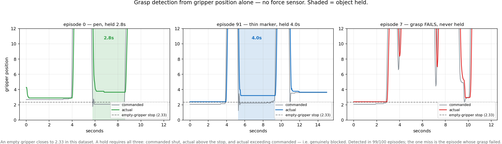
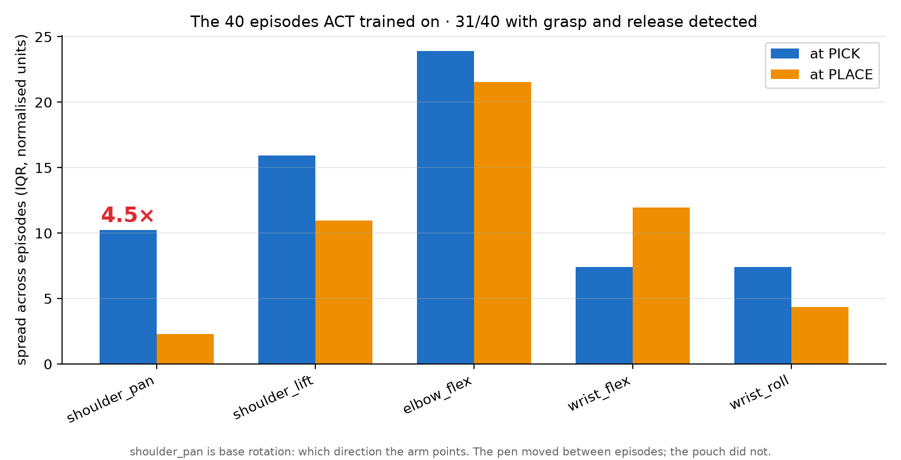

Desk cleanup: the pen task.
Pick a pen off the desk and drop it in the bin. I tried several policies and observed how their behavior changed with the pen, its orientation, and the drop target.
Merged dataset
I collected two datasets, both teleoperated on the same table:
- 40 episodes with a single pen dropped into a bin, varying the pen's location.
- 60 episodes with several differently coloured pens on the table at varied positions, picking up one of them, and with the pouch shifted slightly between episodes.
I merged the two and trained SmolVLA and a diffusion policy on the combined set.
Neither policy completed the task reliably in the trials I ran. Object count, colour, position and pouch location all differ between the two datasets, which makes the resulting behavior difficult to interpret.
| Policy | Training data | Outcome | Note |
|---|---|---|---|
| SmolVLA | merged, 100 ep | Observed failure | Did not reliably complete the task |
| Diffusion policy | merged, 100 ep | Observed failure | Did not reliably complete the task |
Single orange pen
In another experiment, I used a single orange pen, 40 demonstrations, and one pouch. ACT completed the task in the baseline setup shown below.
Conditions tried
I also tried several variations around this setup. Both policies below used the same 40 demonstrations. Each cell summarizes a small number of informal trials, not a measured success rate.
| Factor | Condition | ACT | MolmoAct 2 |
|---|---|---|---|
| Baseline | Orange pen, trained orientation, trained pouch | Observed success | Observed success |
| Pen color | Purple | Observed success | Observed success |
| Green | Observed failure | Observed success | |
| Blue | Observed failure | Observed success | |
| Brown | Observed failure | Not tested | |
| Drop target | Different pouch | Observed failure | Not tested |
| Pouch removed entirely | Observed failureReleased near the original location | Not tested | |
| Pen orientation | Significantly rotated | Observed failure | Not tested |
| Object count | Two pens, picked sequentially | Not tested | Observed success |
What I observed
These trials produced three behaviors worth noting.
- ACT completed the task with the orange and purple pens in the conditions tried, but failed with the green, blue and brown pens. This is consistent with sensitivity to visual appearance, although these trials do not establish which image features the policy relied on.
- When I removed or changed the pouch, ACT still released the pen near the original drop location. This is consistent with learning a location-specific action rather than responding to the visible container.
- ACT also failed in the significantly rotated-pen condition I tried. More trials would be needed to characterize how sensitive it is to orientation.
In the pouch-removed trial, the policy continued executing without an obvious indication that the target was missing. From this behavior alone, I cannot determine what internal representation it learned.
Related ideas from the literature
The color sensitivity resembles what the literature describes as shortcut learning: a policy may rely on a feature that correlates with success in the demonstrations but is not central to the intended task. The fixed drop behavior is also reminiscent of causal confusion in imitation learning. These concepts offer possible interpretations of what I observed, rather than diagnoses established by the current experiments.
MolmoAct: swapping in a VLM backbone
MolmoAct 2, Ai2's action-reasoning model on the Molmo2-ER VLM backbone, used the same 40 demonstrations as ACT. In the conditions I tried, it completed the task with additional pen colors that ACT failed on. Because the models differ in more than just their visual backbones, these trials do not isolate the reason for the difference.
In the run shown below, it also picked up two pens one at a time and placed them in the bin.
Observations from the demonstrations
A possible grasp signal from gripper position
Every frame records what the gripper was told to do and where it actually got to. Told to shut but unable to, something may be in the way. In this dataset, that heuristic identified the apparent grasp interval in 99 of 100 episodes. The remaining episode was also the one in which the grasp visibly failed.

The demonstrations contained less variation at placement
In the 40 episodes ACT trained on, shoulder_pan (base rotation) spreads
10.2 units at pick and 2.3 at place: 4.5x tighter at the
container than at the object. Every release lands between −8.5 and −1.3. The release
configurations were more tightly clustered than the grasp configurations. This does not
establish what ACT learned, but it offers a possible explanation for the location-specific
release behavior observed later.

References
- Zhao et al., Learning Fine-Grained Bimanual Manipulation with Low-Cost Hardware, RSS 2023. The ACT policy: action chunking with a CVAE and transformer.
- Hugging Face LeRobot, SmolVLA. Roughly 450M parameters in total, including an approximately 100M-parameter action expert.
- Chi et al., Diffusion Policy: Visuomotor Policy Learning via Action Diffusion, RSS 2023.
- Ai2, MolmoAct 2: An open foundation for robots that work in the real world. Action reasoning model on the Molmo2-ER embodied-reasoning VLM backbone.
- Geirhos et al., Shortcut Learning in Deep Neural Networks, Nature Machine Intelligence 2020. The general phenomenon behind the pen-color result.
- Shortcut Learning in Generalist Robot Policies: The Role of Dataset Diversity and Fragmentation, 2025. Reports color as the dominant factor policies over-rely on, and the budget-reallocation fix.
- de Haan, Jayaraman and Levine, Causal Confusion in Imitation Learning, NeurIPS 2019. Why a policy can learn a correlate of the goal and be unable to tell the difference.